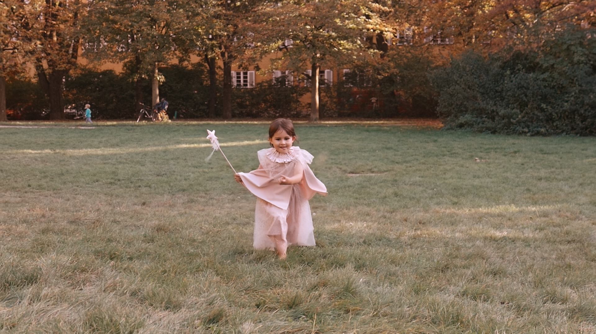
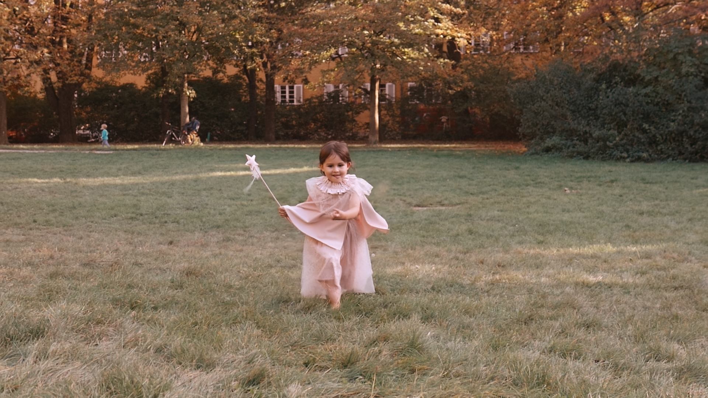
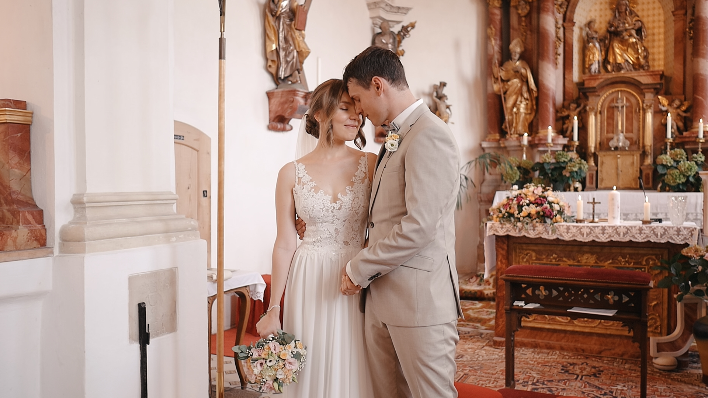
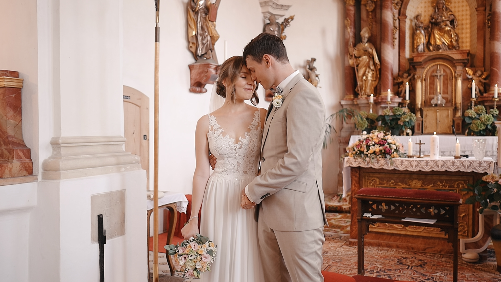

Ihre Expertin für emotionale und wirkungsvolle Videoproduktionen
über mich

Mit Leidenschaft für das Erzählen von Geschichten und einem Auge für das Wesentliche
habe ich mich darauf spezialisiert, einzigartige Videos zu kreieren, die bewegen und
begeistern. Als erfahrene Produzentin biete ich Ihnen umfassendes Know-how in der
Erstellung von Werbe-, Familien- und Hochzeitsvideos,
die durch Qualität und Kreativität
überzeugen.
Meine Mission: Ich sorge dafür, dass Ihre Erinnerungen und Botschaften in eindrucksvollen
Videos lebendig werden – individuell, professionell und mit viel Herz. Vertrauen Sie auf
meine Erfahrung und lassen Sie uns gemeinsam etwas Einzigartiges schaffen.
𝔾𝕒𝕝𝕖𝕣𝕚𝕖
Familie
 


Ihre Familienmomente für die Ewigkeit – Einzigartige Videos, die Erinnerungen lebendig halten.
Die schönsten Momente im Leben sind die, die wir mit unseren Liebsten teilen. Mit meinen
Familienvideos bewahren wir diese kostbaren Augenblicke – von den ersten Schritten Ihres
Kindes bis zu den großen Familienfeiern. Wir verwandeln Ihre wertvollen Erinnerungen in ein
bewegendes Video, das Sie und Ihre Familie immer wieder zum Lächeln bringt.
Mit Herz und Kreativität fangen ich die unvergesslichen Momente ein, die Ihr Familienleben
so besonders machen. Jedes Video wird individuell gestaltet und spiegelt die einzigartige
Geschichte Ihrer Familie wider. Ob als Geschenk oder als persönlicher Schatz – meine
Familienvideos halten Ihre schönsten Erinnerungen lebendig.
Weil Familie das Wichtigste ist – Lassen Sie uns Ihre Geschichte erzählen, in einem Video,
das Generationen verbindet.]
Hochzeit


 



Ihr Hochzeitstag in bewegenden Bildern – Unvergesslich. Authentisch. Einzigartig.
Der schönste Tag Ihres Lebens verdient es, für die Ewigkeit festgehalten zu werden. Lassen
Sie mir Ihre Liebesgeschichte in einem Hochzeitsvideo erzählen, so dass Ihre Emotionen,
besonderen Momente und die Atmosphäre dieses Tages in atemberaubender Qualität für
immer da sein werden.
Mit Liebe zum Detail und einem Auge für das Wesentliche kreieren ich einen Film, der mehr
ist als nur eine Erinnerung. Ich fange die kleinen Gesten, die Freudentränen und das
strahlende Lächeln ein – all die kostbaren Augenblicke, die Ihr Herz berühren. Professionell,
diskret und individuell auf Ihre Wünsche abgestimmt, erstelle ich ihr Hochzeitsvideo, das Sie
immer wieder gerne ansehen werden.
Ihr großer Tag, Ihre Geschichte, und mein Versprechen: Ein Meisterwerk, das Ihre Liebe zum
Leuchten bringt.
Interview

title aber kein content
[Descrizione sezione Interview da modificare...]
Sport

Erfolge im Rampenlicht – Promotionvideos, die Sportler inszenieren.
Jeder Athlet hat eine Geschichte, die es wert ist, erzählt zu werden. Unsere Promotionvideos
fangen nicht nur die sportlichen Höchstleistungen ein, sondern bringen die Leidenschaft, den
Einsatz und die Persönlichkeit jedes Sportlers zur Geltung. Egal, ob Sie Ihren Weg an die
Spitze dokumentieren, Sponsoren beeindrucken oder Ihre Fans begeistern möchten – ich
liefere das perfekte Video.
Mit einem Gespür für Dynamik und Emotionen kreiere ich visuelle Highlights, die Ihre
sportliche Leistung und Ihre Einzigartigkeit herausstellen. Vom packenden Highlight-Reel bis
zur persönlichen Erfolgsstory – ich setze Ihre Stärken perfekt in Szene.
Ihr Talent verdient Aufmerksamkeit – Mit Promotionvideos, die begeistern, motivieren und
Ihre sportliche Karriere vorantreiben.
𝕄𝕖𝕕𝕚𝕒
Familienmomente für die Ewigkeit...
Setzen Sie Ihr Unternehmen professionell in Szene...
Leidenschaft, Leistung, Persönlichkeit...
Bewahren Sie Ihre schönsten Erinnerungen...